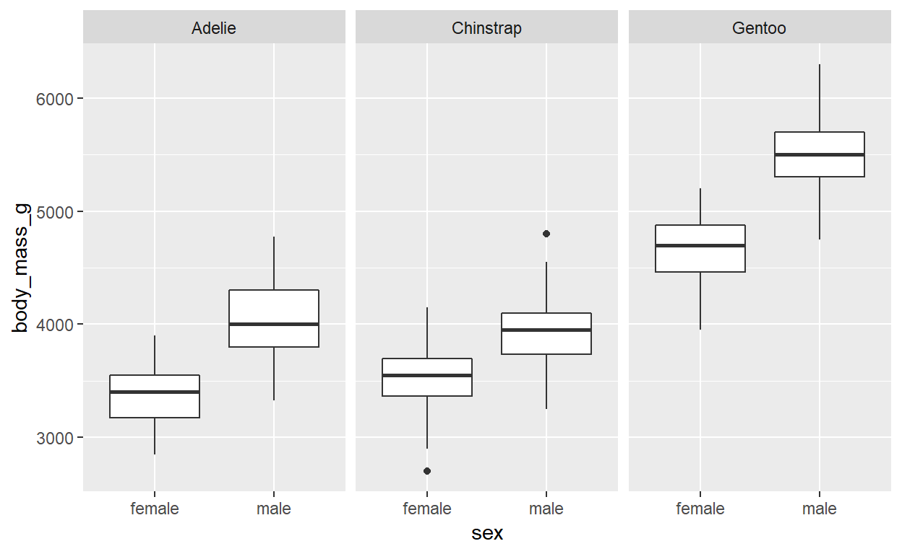
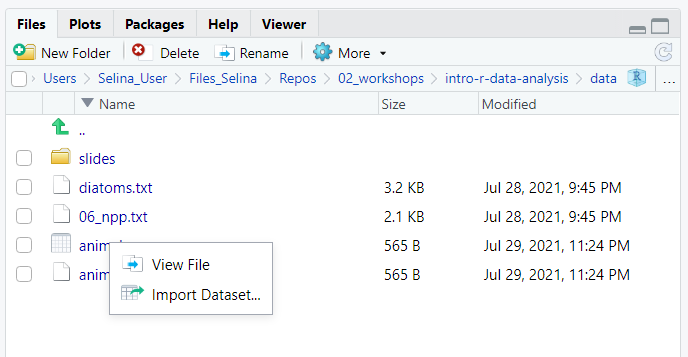
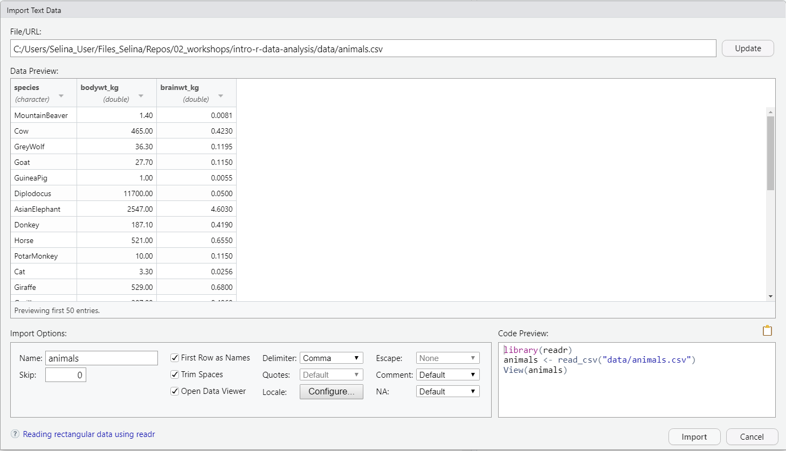

1 ggplot2
1.1 and 1.2 Getting started with ggplot and palmerpenguins
# install.packages("tidyverse")
# install.packages("palmerpenguins")
library(tidyverse)
library(palmerpenguins)
- Have a look at the penguin data set
penguins
# A tibble: 344 x 8
species island bill_length_mm bill_depth_mm flipper_length_mm
<fct> <fct> <dbl> <dbl> <int>
1 Adelie Torgersen 39.1 18.7 181
2 Adelie Torgersen 39.5 17.4 186
3 Adelie Torgersen 40.3 18 195
4 Adelie Torgersen NA NA NA
5 Adelie Torgersen 36.7 19.3 193
6 Adelie Torgersen 39.3 20.6 190
# ... with 338 more rows, and 3 more variables: body_mass_g <int>,
# sex <fct>, year <int>1.3 Exploratory plotting
1.3.1 Relationship between bill length and bill depth (scatterplot)
What is the relationship between bill length and bill depth?
- Create a scatterplot with bill length on the x-axis and bill depth on the y-axis
- Can you add a regression line?
- Add species as color aesthetic. Does your interpretation of the data change?
- What is the difference between adding color as a global aesthetic or as a local aesthetic of the point layer?
- Add species as shape aesthetic as well to distinguish the species
# Bill length vs. bill depth scatterplot with regression line
ggplot(
data = penguins,
aes(
x = bill_length_mm,
y = bill_depth_mm
)
) +
geom_point() +
geom_smooth(method = "lm", se = FALSE)

# or short
ggplot(penguins, aes(bill_length_mm, bill_depth_mm)) +
geom_point() +
geom_smooth(method = "lm", se = FALSE)
If we add the color aesthetic locally to the point layer, only this layer will be affected by it. The regression line is not separated by species but still calculated and plotted for all data points together:
# Bill length vs. bill depth scatterplot with regression line
# color as aesthetic local to the point layer
ggplot(penguins, aes(bill_length_mm, bill_depth_mm)) +
geom_point(aes(color = species)) +
geom_smooth(method = "lm", se = FALSE)

We can see an example of the Simpson’s paradox here. If you don’t consider species, it looks like the bill depth decreases with bill length. But after separating the data by species, we see that the effect is actually the opposite.
To draw separate regression lines for the species, we need to either add the color aesthetic to the smooth layer as well, or define the color aesthetic gloablly in the top layer ggplot call.
# Option A: Define color aesthetic in smooth layer as well
ggplot(penguins, aes(x = bill_length_mm, y = bill_depth_mm)) +
geom_point(aes(color = species)) +
geom_smooth(aes(color = species),
method = "lm", se = FALSE
)

# Option B: Define color aesthetic once globally
ggplot(penguins, aes(
x = bill_length_mm,
y = bill_depth_mm,
color = species
)) +
geom_point() +
geom_smooth(method = "lm", se = FALSE)
1.3.2 Difference in flipper length between species (boxplot)
Is there a difference in flipper length between the species?
- Create a boxplot of the flipper length (y-axis) for the different species (x-axis)
- Try adding notches to the boxplots by setting
notch = TRUEin the boxplot layer - Extra: Add a layer with
geom_point(). Try settingposition = position_jitter()as argument in the point layer. What does it do?
# Basic boxplot of flipper length with notches
ggplot(penguins, aes(species, flipper_length_mm)) +
geom_boxplot(notch = TRUE)

A geom_point with position = position_jitter() will add the individual data points to the plot. It’s important to set a seed here to get the same result for the point position on the x-axis every time. Otherwise your plot is not reproducible.
ggplot(penguins, aes(species, flipper_length_mm)) +
geom_boxplot() +
geom_point(position = position_jitter(seed = 123))

1.3.3 Differences between bodymass of male and female penguins (boxplot)
Are male penguins heavier than female penguins? And is this different between the 3 species?
- Create a boxplot with body mass on the y axis and sex on the x axis
- Add the difference between penguin species to this plot. Try the different options ggplot offers
- species as color aesthetic
- species as fill aesthetic
- species as facet using
facet_wrap
- Extra: What happens if you use
geom_violininstead ofgeom_boxplot? Can you combine both geoms in one plot?
# Basic boxplot of body mass for penguins of different sex
ggplot(penguins, aes(x = sex, y = body_mass_g)) +
geom_boxplot()

Species as color aesthetic:
ggplot(penguins, aes(x = sex,
y = body_mass_g)) +
geom_boxplot(aes(color = species))

Species as fill aesthetic
ggplot(penguins, aes(x = sex, y = body_mass_g)) +
geom_boxplot(aes(fill = species))

Species as facets:
ggplot(penguins, aes(x = sex, y = body_mass_g)) +
geom_boxplot() +
facet_wrap(~species)

With geom_violin
ggplot(penguins, aes(x = sex, y = body_mass_g)) +
geom_violin() +
geom_boxplot(width = .4) +
facet_wrap(~species)

1.4 Beautify the plots
1.4.1 Beatuify plots from 1.3
Here are just some examples of how to make the plots from before prettier. Of course there a many other options as well.
Example one: Boxplot of flipper length and species
ggplot(penguins, aes(species, flipper_length_mm, color = species)) +
geom_boxplot(width = 0.3) +
geom_point(
alpha = 0.5,
position = position_jitter(width = 0.2, seed = 123)
) +
ggsci::scale_color_uchicago() +
labs(x = "Species", y = "Flipper length (mm)") +
theme_minimal() +
theme(legend.position = "none")

What was changed compared to the basic plot?
- Add color for each species by setting a global
coloraesthetic - Make boxes and jitter points less wide by setting
widthfor both layers - Make jitter points slightly transparent by specifying
alpha = 0.5for the jitter layer - Change the color to nicer colors from the
ggscipackage - Change from default theme to
theme_minimal() - Remove the legend with
legend.position = "none" - Change the axis labels with
labs()
Example two: Reproducing the plot from the presentation
The following code is adapted from the palmerpengins package website.
ggplot(
data = penguins,
aes(
x = bill_length_mm,
y = bill_depth_mm,
color = species,
shape = species
)
) +
geom_point(size = 3, alpha = 0.8) +
geom_smooth(method = "lm", se = FALSE) +
scale_color_manual(values = c("darkorange", "purple", "cyan4")) +
labs(
title = "Penguin bill dimensions",
subtitle = "Bill length and depth for Adelie, Chinstrap and Gentoo Penguins at Palmer Station LTER",
x = "Bill length (mm)",
y = "Bill depth (mm)",
color = "Penguin species",
shape = "Penguin species"
) +
theme_minimal() +
theme(
legend.position = c(0.85, 0.15),
legend.background = element_rect(fill = "white", color = NA)
)

What was changed compared to the basic plot?
- Make points larger and slightly transparent by setting
sizeandalphafor the point layer - Change to custom color scale
- Add title and subtitle with
labs - Change title of x-axis, y-axis and legend for color and shape aesthetic with
labs - Use
theme_minimal()instead of default theme - Change legend position to bottom right corner within the plot
- Positions are relative to the bottom left corner of the plot
- 0.85 (85% of plot width) to the right
- 0.15 (15% of plot height) towards the top
1.5 Save one of the plots on your machine
Example with one of the plots from above:
flipper_box <- ggplot(penguins, aes(species, flipper_length_mm, color = species)) +
geom_boxplot(width = 0.3) +
geom_jitter(alpha = 0.5, position = position_jitter(width = 0.2, seed = 123)) +
ggsci::scale_color_uchicago() +
labs(x = "Species", y = "Flipper length (mm)") +
theme_minimal() +
theme(legend.position = "none")
# save as png in /img directory of the project
ggsave(filename = "./img/flipper_box.png", flipper_box)
# save as pdf in /img directory of the project
ggsave(filename = "./img/flipper_box.pdf", flipper_box)
References
Check out the package website of the palmerpenguin package. They have more nice examples of data visualizations that you can do with ggplot.
Horst AM, Hill AP, Gorman KB (2020). palmerpenguins: Palmer Archipelago (Antarctica) penguin data. R package version 0.1.0. https://allisonhorst.github.io/palmerpenguins/. doi: 10.5281/zenodo.3960218.
2 dplyr
2.2 Data transformation with dplyr
Find all penguins that …
- … have a bill length between 40 and 45 mm.
filter(penguins, between(bill_length_mm, 40, 45))
# A tibble: 77 x 8
species island bill_length_mm bill_depth_mm flipper_length_mm
<fct> <fct> <dbl> <dbl> <int>
1 Adelie Torgersen 40.3 18 195
2 Adelie Torgersen 42 20.2 190
3 Adelie Torgersen 41.1 17.6 182
4 Adelie Torgersen 42.5 20.7 197
5 Adelie Biscoe 40.6 18.6 183
6 Adelie Biscoe 40.5 17.9 187
7 Adelie Biscoe 40.5 18.9 180
8 Adelie Dream 40.9 18.9 184
9 Adelie Dream 42.2 18.5 180
10 Adelie Dream 40.8 18.4 195
# ... with 67 more rows, and 3 more variables: body_mass_g <int>,
# sex <fct>, year <int># same as
# filter(penguins, bill_length_mm < 45 & bill_length_mm > 40)
- … for which we know the sex.
# A tibble: 333 x 8
species island bill_length_mm bill_depth_mm flipper_length_mm
<fct> <fct> <dbl> <dbl> <int>
1 Adelie Torgersen 39.1 18.7 181
2 Adelie Torgersen 39.5 17.4 186
3 Adelie Torgersen 40.3 18 195
4 Adelie Torgersen 36.7 19.3 193
5 Adelie Torgersen 39.3 20.6 190
6 Adelie Torgersen 38.9 17.8 181
7 Adelie Torgersen 39.2 19.6 195
8 Adelie Torgersen 41.1 17.6 182
9 Adelie Torgersen 38.6 21.2 191
10 Adelie Torgersen 34.6 21.1 198
# ... with 323 more rows, and 3 more variables: body_mass_g <int>,
# sex <fct>, year <int>- … which are of the species Adelie or Gentoo and live either on Dream or on Torgersen
# A tibble: 108 x 8
species island bill_length_mm bill_depth_mm flipper_length_mm
<fct> <fct> <dbl> <dbl> <int>
1 Adelie Torgersen 39.1 18.7 181
2 Adelie Torgersen 39.5 17.4 186
3 Adelie Torgersen 40.3 18 195
4 Adelie Torgersen NA NA NA
5 Adelie Torgersen 36.7 19.3 193
6 Adelie Torgersen 39.3 20.6 190
7 Adelie Torgersen 38.9 17.8 181
8 Adelie Torgersen 39.2 19.6 195
9 Adelie Torgersen 34.1 18.1 193
10 Adelie Torgersen 42 20.2 190
# ... with 98 more rows, and 3 more variables: body_mass_g <int>,
# sex <fct>, year <int># or
# filter(penguins, (species == "Adelie" | species == "Gentoo") &
# (island == "Dream" | island == "Torgersen"))
- … lived on the island Dream in the year 2007. How many of them were from each of the 3 species?
filter(penguins, island == "Dream" & year == 2007) %>%
count(species)
# A tibble: 2 x 2
species n
<fct> <int>
1 Adelie 20
2 Chinstrap 26Count …
- … the number of penguins on each island.
count(penguins, island)
# A tibble: 3 x 2
island n
<fct> <int>
1 Biscoe 168
2 Dream 124
3 Torgersen 52- … the number of penguins of each species on each island.
count(penguins, island, species)
# A tibble: 5 x 3
island species n
<fct> <fct> <int>
1 Biscoe Adelie 44
2 Biscoe Gentoo 124
3 Dream Adelie 56
4 Dream Chinstrap 68
5 Torgersen Adelie 52Sort …
- …
penguinsto find penguins with lowest body mass
arrange(penguins, body_mass_g)
# A tibble: 344 x 8
species island bill_length_mm bill_depth_mm flipper_length_mm
<fct> <fct> <dbl> <dbl> <int>
1 Chinstrap Dream 46.9 16.6 192
2 Adelie Biscoe 36.5 16.6 181
3 Adelie Biscoe 36.4 17.1 184
4 Adelie Biscoe 34.5 18.1 187
5 Adelie Dream 33.1 16.1 178
6 Adelie Torgersen 38.6 17 188
7 Chinstrap Dream 43.2 16.6 187
8 Adelie Biscoe 37.9 18.6 193
9 Adelie Dream 37.5 18.9 179
10 Adelie Dream 37 16.9 185
# ... with 334 more rows, and 3 more variables: body_mass_g <int>,
# sex <fct>, year <int>- …
penguinsto find penguins with highest body mass
arrange(penguins, desc(body_mass_g))
# A tibble: 344 x 8
species island bill_length_mm bill_depth_mm flipper_length_mm
<fct> <fct> <dbl> <dbl> <int>
1 Gentoo Biscoe 49.2 15.2 221
2 Gentoo Biscoe 59.6 17 230
3 Gentoo Biscoe 51.1 16.3 220
4 Gentoo Biscoe 48.8 16.2 222
5 Gentoo Biscoe 45.2 16.4 223
6 Gentoo Biscoe 49.8 15.9 229
7 Gentoo Biscoe 48.4 14.6 213
8 Gentoo Biscoe 49.3 15.7 217
9 Gentoo Biscoe 55.1 16 230
10 Gentoo Biscoe 49.5 16.2 229
# ... with 334 more rows, and 3 more variables: body_mass_g <int>,
# sex <fct>, year <int>- …
penguinsby species and sex, with longest flippers first
arrange(penguins, species, sex, desc(flipper_length_mm))
# A tibble: 344 x 8
species island bill_length_mm bill_depth_mm flipper_length_mm
<fct> <fct> <dbl> <dbl> <int>
1 Adelie Dream 35.7 18 202
2 Adelie Biscoe 38.6 17.2 199
3 Adelie Biscoe 38.1 16.5 198
4 Adelie Torgersen 39.6 17.2 196
5 Adelie Torgersen 40.3 18 195
6 Adelie Torgersen 38.7 19 195
7 Adelie Dream 36.4 17 195
8 Adelie Biscoe 35.5 16.2 195
9 Adelie Dream 36 17.8 195
10 Adelie Torgersen 36.7 19.3 193
# ... with 334 more rows, and 3 more variables: body_mass_g <int>,
# sex <fct>, year <int>Select …
- … only the variables species, sex and year
select(penguins, species, sex, year)
# A tibble: 344 x 3
species sex year
<fct> <fct> <int>
1 Adelie male 2007
2 Adelie female 2007
3 Adelie female 2007
4 Adelie <NA> 2007
5 Adelie female 2007
6 Adelie male 2007
7 Adelie female 2007
8 Adelie male 2007
9 Adelie <NA> 2007
10 Adelie <NA> 2007
# ... with 334 more rows- … variables based on the following vector
cols <- c("species", "bill_length_mm", "flipper_length_mm", "body_mass_kg")
select(penguins, any_of(cols))
# A tibble: 344 x 3
species bill_length_mm flipper_length_mm
<fct> <dbl> <int>
1 Adelie 39.1 181
2 Adelie 39.5 186
3 Adelie 40.3 195
4 Adelie NA NA
5 Adelie 36.7 193
6 Adelie 39.3 190
7 Adelie 38.9 181
8 Adelie 39.2 195
9 Adelie 34.1 193
10 Adelie 42 190
# ... with 334 more rows# this would return an error
select(penguins, all_of(cols))
Error: Can't subset columns that don't exist.
x Column `body_mass_kg` doesn't exist.- … only columns that contain measurements in mm
select(penguins, ends_with("mm"))
# A tibble: 344 x 3
bill_length_mm bill_depth_mm flipper_length_mm
<dbl> <dbl> <int>
1 39.1 18.7 181
2 39.5 17.4 186
3 40.3 18 195
4 NA NA NA
5 36.7 19.3 193
6 39.3 20.6 190
7 38.9 17.8 181
8 39.2 19.6 195
9 34.1 18.1 193
10 42 20.2 190
# ... with 334 more rows# or
#select(penguins, contains("_mm"))
Add a column …
- … with abbreviations for the species (Adelie = A, Gentoo = G, Chinstrap = C).
mutate(penguins,
species_short = case_when(
species == "Adelie" ~ "A",
species == "Gentoo" ~ "G",
species == "Chinstrap" ~ "C"
))
# A tibble: 344 x 9
species island bill_length_mm bill_depth_mm flipper_length_mm
<fct> <fct> <dbl> <dbl> <int>
1 Adelie Torgersen 39.1 18.7 181
2 Adelie Torgersen 39.5 17.4 186
3 Adelie Torgersen 40.3 18 195
4 Adelie Torgersen NA NA NA
5 Adelie Torgersen 36.7 19.3 193
6 Adelie Torgersen 39.3 20.6 190
7 Adelie Torgersen 38.9 17.8 181
8 Adelie Torgersen 39.2 19.6 195
9 Adelie Torgersen 34.1 18.1 193
10 Adelie Torgersen 42 20.2 190
# ... with 334 more rows, and 4 more variables: body_mass_g <int>,
# sex <fct>, year <int>, species_short <chr>- … with the ratio of bill length to bill depth
mutate(penguins,
ratio = bill_length_mm / bill_depth_mm)
# A tibble: 344 x 9
species island bill_length_mm bill_depth_mm flipper_length_mm
<fct> <fct> <dbl> <dbl> <int>
1 Adelie Torgersen 39.1 18.7 181
2 Adelie Torgersen 39.5 17.4 186
3 Adelie Torgersen 40.3 18 195
4 Adelie Torgersen NA NA NA
5 Adelie Torgersen 36.7 19.3 193
6 Adelie Torgersen 39.3 20.6 190
7 Adelie Torgersen 38.9 17.8 181
8 Adelie Torgersen 39.2 19.6 195
9 Adelie Torgersen 34.1 18.1 193
10 Adelie Torgersen 42 20.2 190
# ... with 334 more rows, and 4 more variables: body_mass_g <int>,
# sex <fct>, year <int>, ratio <dbl>Calculate …
- … mean flipper length and body mass for the 3 species and male and female penguins separately
penguins %>%
group_by(species, sex) %>%
summarize(
mean_flipper = mean(flipper_length_mm, na.rm = TRUE),
mean_body = mean(body_mass_g, na.rm = TRUE)
)
# A tibble: 8 x 4
# Groups: species [3]
species sex mean_flipper mean_body
<fct> <fct> <dbl> <dbl>
1 Adelie female 188. 3369.
2 Adelie male 192. 4043.
3 Adelie <NA> 186. 3540
4 Chinstrap female 192. 3527.
5 Chinstrap male 200. 3939.
6 Gentoo female 213. 4680.
7 Gentoo male 222. 5485.
8 Gentoo <NA> 216. 4588.- Can you do the same but remove the penguins for which we don’t know the sex first?
penguins %>%
filter(!is.na(sex)) %>%
group_by(species, sex) %>%
summarize(
mean_flipper = mean(flipper_length_mm, na.rm = TRUE),
mean_body = mean(body_mass_g, na.rm = TRUE)
)
# A tibble: 6 x 4
# Groups: species [3]
species sex mean_flipper mean_body
<fct> <fct> <dbl> <dbl>
1 Adelie female 188. 3369.
2 Adelie male 192. 4043.
3 Chinstrap female 192. 3527.
4 Chinstrap male 200. 3939.
5 Gentoo female 213. 4680.
6 Gentoo male 222. 5485.Extras
- Make a boxplot of penguin body mass with sex on the y-axis and facets for the different species. Can you remove the penguins with missing values for sex first?
penguins %>%
filter(!is.na(sex)) %>%
ggplot(aes(x = sex, y = body_mass_g)) +
geom_boxplot() +
facet_wrap(~species)

- Make a scatterplot with the ratio of bill length to bill depth on the y axis and flipper length on the x axis? Can you distinguish the point between male and female penguins and remove penguins with unknown sex before making the plot?
penguins %>%
mutate(ratio = bill_length_mm / bill_depth_mm) %>%
filter(!is.na(sex)) %>%
ggplot(aes(x = flipper_length_mm, y = ratio, color = sex)) +
geom_point() +
scale_color_manual(values = c("cyan4", "darkorange")) +
labs(
x = "Flipper lenght (mm)",
y = "Ratio bill length / bill depth (-)"
) +
theme_minimal()
3 readr
3.1 Create a tibble and write it
Load the package and creat the tibble:
library(tidyverse)
species <- c(
"MountainBeaver", "Cow", "GreyWolf", "Goat",
"GuineaPig", "Diplodocus", "AsianElephant", "Donkey",
"Horse", "PotarMonkey", "Cat", "Giraffe",
"Gorilla", "Human", "AfricanElephant", "Triceratops",
"RhesusMonkey", "Kangaroo", "GoldenHamster", "Mouse",
"Rabbit", "Sheep", "Jaguar", "Chimpanzee",
"Rat", "Brachiosaurus", "Mole", "Pig"
)
bodywt_kg <- c(
1.4, 465, 36.3, 27.7, 1., 11700, 2547, 187.1,
521, 10, 3.3, 529, 207, 62, 6654, 9400,
6.8, 35, 0.1, 0.02, 2.5, 55.5, 100, 52.2,
0.3, 87000, 0.1, 192
)
brainwt_g <- c(
8.1, 423, 119.5, 115, 5.5, 50, 4603, 419, 655, 115, 25.6,
680, 406, 1320, 5712, 70, 179, 56, 1, 0.4, 12.1, 175,
157, 440, 1.9, 154.5, 3, 180
)
# Creating the tibble
animals <- tibble(
species = species,
bodywt_kg = bodywt_kg,
brainwt_kg = brainwt_g / 1000
)
Writing the data to disk:
write_csv(x = animals, file = "./data/animals.csv") # write as csv
write_tsv(x = animals, file = "./data/animals.txt") # write as txt
3.2 Read data into R
Read the same data back into R:
animals_csv <- read_csv("./data/animals.csv") # read the csv
animals_tsv <- read_tsv("./data/animals.txt") # read the txt
If you use the Files pane to open data files, you can view them in R Studio. For csv files, you have the additional option to click on an Import Dataset button.

If you click on this button, have the possibility to import the data set via a graphical user interface.

This is quite useful because you can preview your data and make sure that all the options are set correctly for importing. You can do this if you are not sure about the correct read_*() function arguments.
Just play with these different options of reading data into R and find one that fits you best.
3 tidyr
4.1 Getting started with tidyr
4.2 Let’s tidy some data sets
1. relig_income
Have a look at the relig_income data set that is included in tidyverse package. The data set contains the results of a survey asking people about their religion and income category.
relig_income
# A tibble: 18 x 11
religion `<$10k` `$10-20k` `$20-30k` `$30-40k` `$40-50k` `$50-75k`
<chr> <dbl> <dbl> <dbl> <dbl> <dbl> <dbl>
1 Agnostic 27 34 60 81 76 137
2 Atheist 12 27 37 52 35 70
3 Buddhist 27 21 30 34 33 58
4 Catholic 418 617 732 670 638 1116
5 Don’t kn~ 15 14 15 11 10 35
6 Evangeli~ 575 869 1064 982 881 1486
7 Hindu 1 9 7 9 11 34
8 Historic~ 228 244 236 238 197 223
9 Jehovah'~ 20 27 24 24 21 30
10 Jewish 19 19 25 25 30 95
11 Mainline~ 289 495 619 655 651 1107
12 Mormon 29 40 48 51 56 112
13 Muslim 6 7 9 10 9 23
14 Orthodox 13 17 23 32 32 47
15 Other Ch~ 9 7 11 13 13 14
16 Other Fa~ 20 33 40 46 49 63
17 Other Wo~ 5 2 3 4 2 7
18 Unaffili~ 217 299 374 365 341 528
# ... with 4 more variables: $75-100k <dbl>, $100-150k <dbl>,
# >150k <dbl>, Don't know/refused <dbl>What is not tidy about this data set? Can you fix it?
The variable income is spread across multiple columns, so we have to use pivot_longer to pivot the columns containing the income information:
pivot_longer(relig_income,
cols = !religion,
names_to = "income",
values_to = "count"
)
# A tibble: 180 x 3
religion income count
<chr> <chr> <dbl>
1 Agnostic <$10k 27
2 Agnostic $10-20k 34
3 Agnostic $20-30k 60
4 Agnostic $30-40k 81
5 Agnostic $40-50k 76
6 Agnostic $50-75k 137
7 Agnostic $75-100k 122
8 Agnostic $100-150k 109
9 Agnostic >150k 84
10 Agnostic Don't know/refused 96
# ... with 170 more rows2. billboard
Have a look at the billboard data set that is included in the tidyverse package. The data set contains information about the chart rank of songs in the year 2000.
billboard
# A tibble: 317 x 79
artist track date.entered wk1 wk2 wk3 wk4 wk5 wk6 wk7
<chr> <chr> <date> <dbl> <dbl> <dbl> <dbl> <dbl> <dbl> <dbl>
1 2 Pac Baby~ 2000-02-26 87 82 72 77 87 94 99
2 2Ge+h~ The ~ 2000-09-02 91 87 92 NA NA NA NA
3 3 Doo~ Kryp~ 2000-04-08 81 70 68 67 66 57 54
4 3 Doo~ Loser 2000-10-21 76 76 72 69 67 65 55
5 504 B~ Wobb~ 2000-04-15 57 34 25 17 17 31 36
6 98^0 Give~ 2000-08-19 51 39 34 26 26 19 2
7 A*Tee~ Danc~ 2000-07-08 97 97 96 95 100 NA NA
8 Aaliy~ I Do~ 2000-01-29 84 62 51 41 38 35 35
9 Aaliy~ Try ~ 2000-03-18 59 53 38 28 21 18 16
10 Adams~ Open~ 2000-08-26 76 76 74 69 68 67 61
# ... with 307 more rows, and 69 more variables: wk8 <dbl>,
# wk9 <dbl>, wk10 <dbl>, wk11 <dbl>, wk12 <dbl>, wk13 <dbl>,
# wk14 <dbl>, wk15 <dbl>, wk16 <dbl>, wk17 <dbl>, wk18 <dbl>,
# wk19 <dbl>, wk20 <dbl>, wk21 <dbl>, wk22 <dbl>, wk23 <dbl>,
# wk24 <dbl>, wk25 <dbl>, wk26 <dbl>, wk27 <dbl>, wk28 <dbl>,
# wk29 <dbl>, wk30 <dbl>, wk31 <dbl>, wk32 <dbl>, wk33 <dbl>,
# wk34 <dbl>, wk35 <dbl>, wk36 <dbl>, wk37 <dbl>, wk38 <dbl>,
# wk39 <dbl>, wk40 <dbl>, wk41 <dbl>, wk42 <dbl>, wk43 <dbl>,
# wk44 <dbl>, wk45 <dbl>, wk46 <dbl>, wk47 <dbl>, wk48 <dbl>,
# wk49 <dbl>, wk50 <dbl>, wk51 <dbl>, wk52 <dbl>, wk53 <dbl>,
# wk54 <dbl>, wk55 <dbl>, wk56 <dbl>, wk57 <dbl>, wk58 <dbl>,
# wk59 <dbl>, wk60 <dbl>, wk61 <dbl>, wk62 <dbl>, wk63 <dbl>,
# wk64 <dbl>, wk65 <dbl>, wk66 <lgl>, wk67 <lgl>, wk68 <lgl>,
# wk69 <lgl>, wk70 <lgl>, wk71 <lgl>, wk72 <lgl>, wk73 <lgl>,
# wk74 <lgl>, wk75 <lgl>, wk76 <lgl>What is not tidy about this data set? Can you fix it?
The variable week is spread across multiple columns. We have to use pivot longer to pivot the week columns:
pivot_longer(billboard,
cols = wk1:wk76,
names_to = "week",
values_to = "rank")
# A tibble: 24,092 x 5
artist track date.entered week rank
<chr> <chr> <date> <chr> <dbl>
1 2 Pac Baby Don't Cry (Keep... 2000-02-26 wk1 87
2 2 Pac Baby Don't Cry (Keep... 2000-02-26 wk2 82
3 2 Pac Baby Don't Cry (Keep... 2000-02-26 wk3 72
4 2 Pac Baby Don't Cry (Keep... 2000-02-26 wk4 77
5 2 Pac Baby Don't Cry (Keep... 2000-02-26 wk5 87
6 2 Pac Baby Don't Cry (Keep... 2000-02-26 wk6 94
7 2 Pac Baby Don't Cry (Keep... 2000-02-26 wk7 99
8 2 Pac Baby Don't Cry (Keep... 2000-02-26 wk8 NA
9 2 Pac Baby Don't Cry (Keep... 2000-02-26 wk9 NA
10 2 Pac Baby Don't Cry (Keep... 2000-02-26 wk10 NA
# ... with 24,082 more rowsExtras
The argument values_drop_na drops rows with missing values in the rank column. Here it makes sense because not every song is in the charts for all 76 weeks.
With the names_prefix argument we can remove the wk before the values of the week variable. This makes it easier to work with later.
pivot_longer(billboard,
cols = wk1:wk76,
names_to = "week",
names_prefix = "wk",
values_to = "rank",
values_drop_na = TRUE)
# A tibble: 5,307 x 5
artist track date.entered week rank
<chr> <chr> <date> <chr> <dbl>
1 2 Pac Baby Don't Cry (Keep... 2000-02-26 1 87
2 2 Pac Baby Don't Cry (Keep... 2000-02-26 2 82
3 2 Pac Baby Don't Cry (Keep... 2000-02-26 3 72
4 2 Pac Baby Don't Cry (Keep... 2000-02-26 4 77
5 2 Pac Baby Don't Cry (Keep... 2000-02-26 5 87
6 2 Pac Baby Don't Cry (Keep... 2000-02-26 6 94
7 2 Pac Baby Don't Cry (Keep... 2000-02-26 7 99
8 2Ge+her The Hardest Part Of ... 2000-09-02 1 91
9 2Ge+her The Hardest Part Of ... 2000-09-02 2 87
10 2Ge+her The Hardest Part Of ... 2000-09-02 3 92
# ... with 5,297 more rows3. fish_encounters
Have a look at the fish_encounters data set that is included in the tidyverse package. The data set contains records of fish detected by different automatic monitoring stations.
fish_encounters
# A tibble: 114 x 3
fish station seen
<fct> <fct> <int>
1 4842 Release 1
2 4842 I80_1 1
3 4842 Lisbon 1
4 4842 Rstr 1
5 4842 Base_TD 1
6 4842 BCE 1
7 4842 BCW 1
8 4842 BCE2 1
9 4842 BCW2 1
10 4842 MAE 1
# ... with 104 more rowsThe column seen only contains values of 1 to indicate that the fish was seen at the respective station.
summary(fish_encounters)
fish station seen
4842 :11 Release:19 Min. :1
4843 :11 I80_1 :19 1st Qu.:1
4844 :11 Lisbon :13 Median :1
4858 :11 Rstr :12 Mean :1
4861 :11 Base_TD:11 3rd Qu.:1
4857 : 9 BCE : 8 Max. :1
(Other):50 (Other):32 What is not tidy about this data set? Can you fix it?
An observation (i.e. one fish) is spread across multiple rows and we have to use pivot_wider to give each fish just one row.
pivot_wider(fish_encounters,
names_from = station,
values_from = seen)
# A tibble: 19 x 12
fish Release I80_1 Lisbon Rstr Base_TD BCE BCW BCE2 BCW2
<fct> <int> <int> <int> <int> <int> <int> <int> <int> <int>
1 4842 1 1 1 1 1 1 1 1 1
2 4843 1 1 1 1 1 1 1 1 1
3 4844 1 1 1 1 1 1 1 1 1
4 4845 1 1 1 1 1 NA NA NA NA
5 4847 1 1 1 NA NA NA NA NA NA
6 4848 1 1 1 1 NA NA NA NA NA
7 4849 1 1 NA NA NA NA NA NA NA
8 4850 1 1 NA 1 1 1 1 NA NA
9 4851 1 1 NA NA NA NA NA NA NA
10 4854 1 1 NA NA NA NA NA NA NA
11 4855 1 1 1 1 1 NA NA NA NA
12 4857 1 1 1 1 1 1 1 1 1
13 4858 1 1 1 1 1 1 1 1 1
14 4859 1 1 1 1 1 NA NA NA NA
15 4861 1 1 1 1 1 1 1 1 1
16 4862 1 1 1 1 1 1 1 1 1
17 4863 1 1 NA NA NA NA NA NA NA
18 4864 1 1 NA NA NA NA NA NA NA
19 4865 1 1 1 NA NA NA NA NA NA
# ... with 2 more variables: MAE <int>, MAW <int>Extra
The values_fill argument can be used to enter values in cells where values are missing. In our case this makes sense because cells with missing values are not really missing information but we know that for this station the fish was not recorded. So we can add a 0 instead of NA.
pivot_wider(fish_encounters,
names_from = station,
values_from = seen,
values_fill = 0)
# A tibble: 19 x 12
fish Release I80_1 Lisbon Rstr Base_TD BCE BCW BCE2 BCW2
<fct> <int> <int> <int> <int> <int> <int> <int> <int> <int>
1 4842 1 1 1 1 1 1 1 1 1
2 4843 1 1 1 1 1 1 1 1 1
3 4844 1 1 1 1 1 1 1 1 1
4 4845 1 1 1 1 1 0 0 0 0
5 4847 1 1 1 0 0 0 0 0 0
6 4848 1 1 1 1 0 0 0 0 0
7 4849 1 1 0 0 0 0 0 0 0
8 4850 1 1 0 1 1 1 1 0 0
9 4851 1 1 0 0 0 0 0 0 0
10 4854 1 1 0 0 0 0 0 0 0
11 4855 1 1 1 1 1 0 0 0 0
12 4857 1 1 1 1 1 1 1 1 1
13 4858 1 1 1 1 1 1 1 1 1
14 4859 1 1 1 1 1 0 0 0 0
15 4861 1 1 1 1 1 1 1 1 1
16 4862 1 1 1 1 1 1 1 1 1
17 4863 1 1 0 0 0 0 0 0 0
18 4864 1 1 0 0 0 0 0 0 0
19 4865 1 1 1 0 0 0 0 0 0
# ... with 2 more variables: MAE <int>, MAW <int>